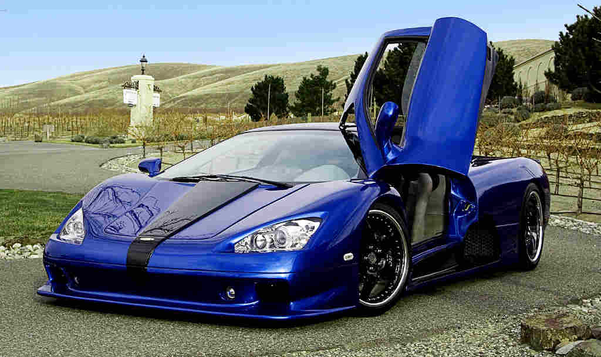
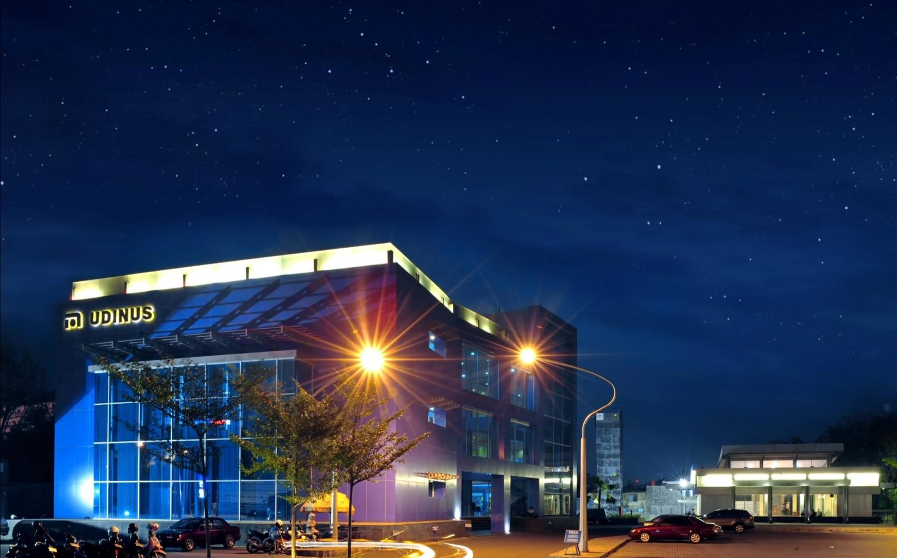

Wallpaper bisa di artikan sebagai jenis kertas dinding atau dapat juga berupa gambar yang di gunakan untuk menghiasi tembok rumah ataupun background. Wallpaper bertujuan agar penghuni rumah atau pemakai merasa tidak bosan dengan gambar yang itu itu saja. Harga Wallpaper beraneka ragam dari yang ratusan ribu sampai jutaan tergantung motif dan design. Selengkapnya
| No | Jenis | Keuntungan | Kekurangan | 1 2 3 |
Otomotif Fantasi Alam |
Terlihat elegant dan mewah Menambah mood Rasa tenang dan damai |
Kecanduan ingin ganti dengan mobil yg lebih bagus Tidak up to date Menimbulkan rasa bosan |
#Wallpaper
#WallpaperOtomotif
#WallpaperFantasi
#WallpaperAlam